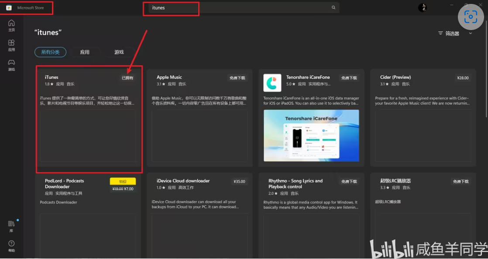

SpaceDesk-Win与iPad有线扩展
Win与平板在同一无线网络下，很容易实现无线连接，但无线延迟较高、设备易发热。有线连接延迟低、帧率高，这篇博客可以让闲置的iPad来跳“最后一舞”，前提是有一个正在吃灰的iPad…
设备说明
- Windows 11, Type-C
- iPad Air4， Type-C
- iPad原装双端Type-C数据线
软件说明
Win端
下载安装SpaceDesk
SpaceDesk官网：最新版本 点击下载
百度网盘：v2.1.15 点击下载
下载安装iTunes
打开Win自带的微软商店，搜索下载。

Microsoft Store疑似v2.1.15 版本的SpaceDesk不具备iPad连接的驱动，需要使用iTunes连接1次，后续就不再使用。
iPad 端
App Store 搜索spacedesk下载。
App Store
安装完成后打开软件，设置最高画质、自动旋转、自动改变IP等，iPad端无需其他操作。
常见问题
黑白显示
原因：SpaceDesk并非是最新版本。下载官网最新版本。
连接Type-c无反应
原因：汉化包Bug。
打开安装包，Remove当前安装版本，重新安装，不要打汉化
参考引用
【1】LXHYouth|使用SpaceDesk实现iPad成为电脑拓展屏(保姆级教程)-CSDN博客
【2】我想当饼藏|ipad作为副屏与Windows电脑有线连接-哔哩哔哩
【3】咸鱼羊同学|Windows与iPad有线副屏SpaceDesk扩展与常见问题 - 哔哩哔哩
--------------------------- End ---------------------------
他山之石，可以攻玉。–《诗·小雅·鹤鸣》